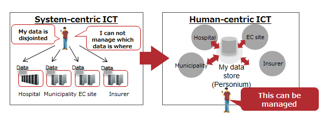

What is Personium?
Personium is a open source PDS (Personal Data Store) server software.

Anyone can set up a PDS server
Because it is a open source software, anyone (business, municipality, government, individual, etc.) can become a PDS provider.
All functions are REST API
HTTP can handle any platform (OS, development language), so you do not have to choose the client platform.
GUI examples for both user and administrator are distributed, please feel free to modify and customize it for your needs.
Specify a remote PDS URL to disclose or grant managing permission to your data
Each Personium PDS is given a URL.
Disclosing or granting managing permission to your data to the other party (e.g. wife, family doctor, work place, etc.) are done by specifying the other party's PDS URL.
PDS access uses digital signature technology, therefore, the other party's PDS can be resided on another server.

Passive data subject： For infants, the elderly, etc., PDS can be handed over to the relatives by granting administrative permission of all data to the relatives.

Configure web of PDS
Groups of PDSs composed of the data disclosing and disclosed parties become a decentralized network which does not favor a specific business operator (the only winner). (Distributed social graph)
It is possible to link together dispersed PDSs to form a huge web of PDSs as if the WWW is formed by linking web sites which are hosted on dispersed web servers.
We also implement security that is necessary for the formation of an open ecosystem.
Data subject (=PDS owner) can be extended to objects, organizations, etc., not just limited to people
Data subjects can be extended to objects, organizations, etc. in the same way as dealing with passive data subjects. (e.g. family/dog Poch's data store)
We recommend an integrated model that handles IoM, IoT, and IoE.(Cyber-Physical)